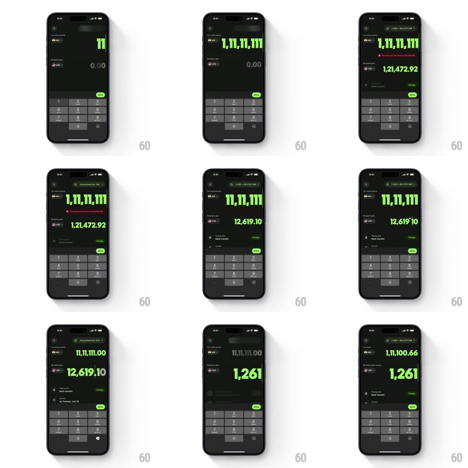

Media
Frame-by-frame

Rebuild this interaction 1:1: Wise's amount input - typed digits scale the amount text down to fit the field as the number grows, and deleting scales it back up, with the converted value updating live.

Rebuild this interaction 1:1: Wise's amount input - typed digits scale the amount text down to fit the field as the number grows, and deleting scales it back up, with the converted value updating live.
## Integration
Integration: stack-agnostic spec - springs given as stiffness/damping, timed motions as duration + curve; map every value to your framework and animation library of choice.
## Scene
Dark transfer screen: a large green amount ("0.00") under the sender row, a smaller grey converted value under the recipient row, a rate banner, and a numeric keypad pinned at the bottom.
## Motion spec
Pattern: auto-scaling currency input.
- Typing: each digit appends instantly; the whole amount rescales to fit its line (per-keystroke, 100ms ease-out) - one digit is huge, nine digits shrink to roughly a third of that size.
- Grouping commas fade in as they appear (150ms) without shifting the baseline.
- The converted value ticks up with a quick digit roll (150ms) whenever the amount changes.
- Deleting: digits remove and the text scales back up on the same 100ms ease; crossing the account limit flashes the amount red and bounces it (translateX +-6px, 200ms) with an error line fading in under the sender row.
- The keypad keys depress on tap (scale 0.94, 100ms) but never move the layout.
## Calibration
- Scaling is continuous and centered on the amount's right edge - the caret position stays put.
- Rescale happens per keystroke, not after a pause.
## Reduced motion
Instant rescale without the ease.
## Don't miss
- The limit error is a shake plus recolor, not a modal.
- The converted value animates on every keystroke too.